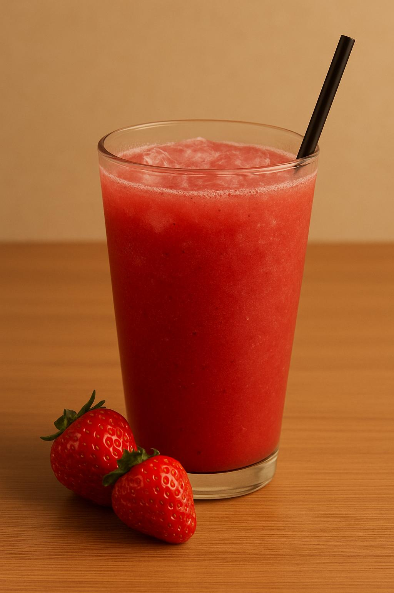
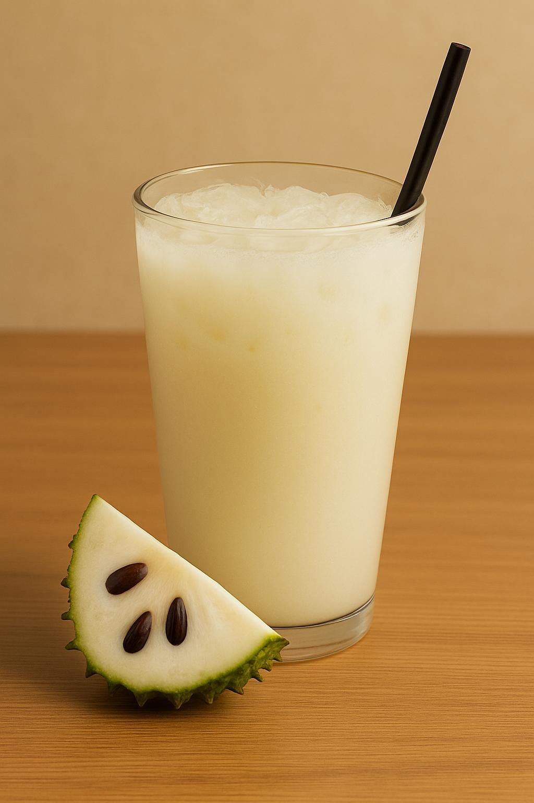
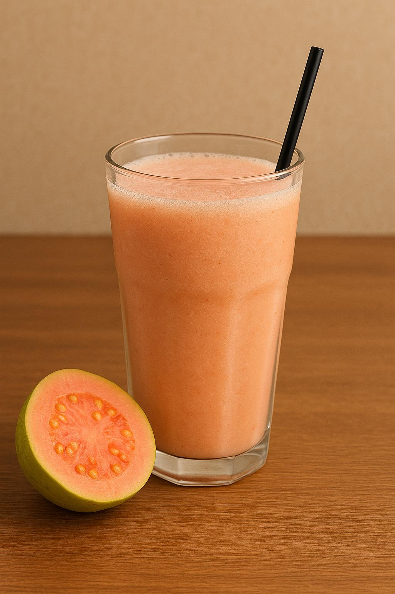
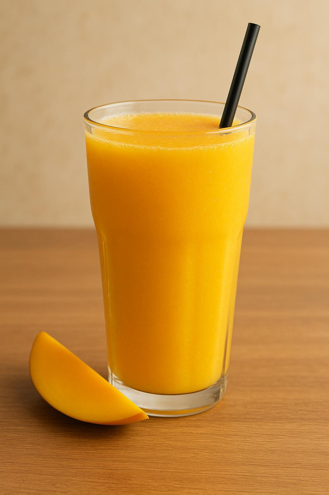
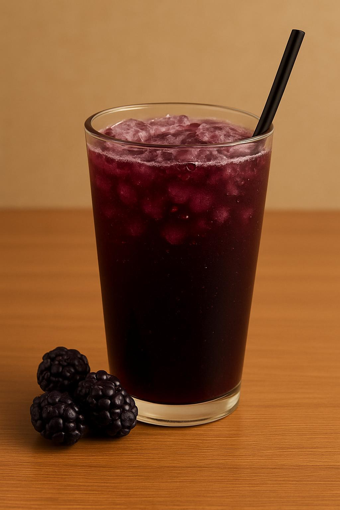
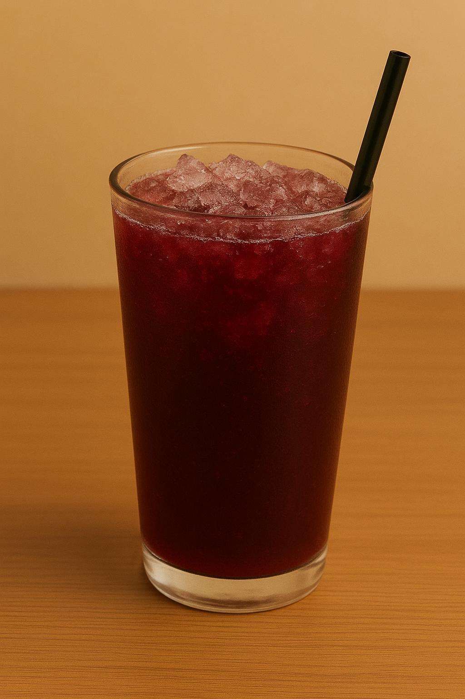
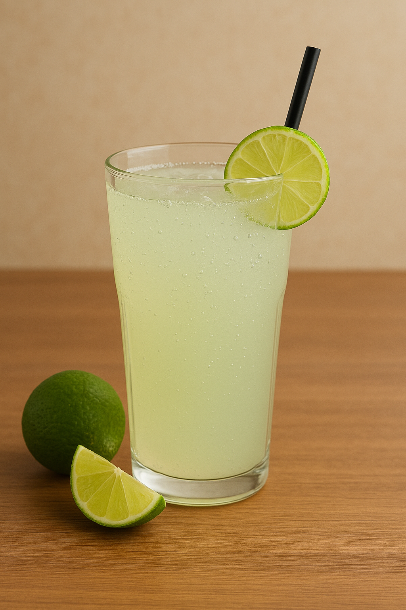
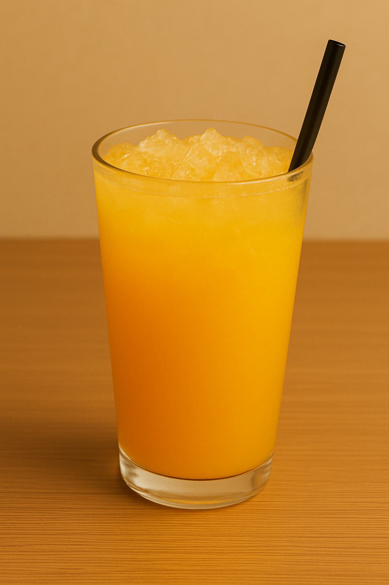
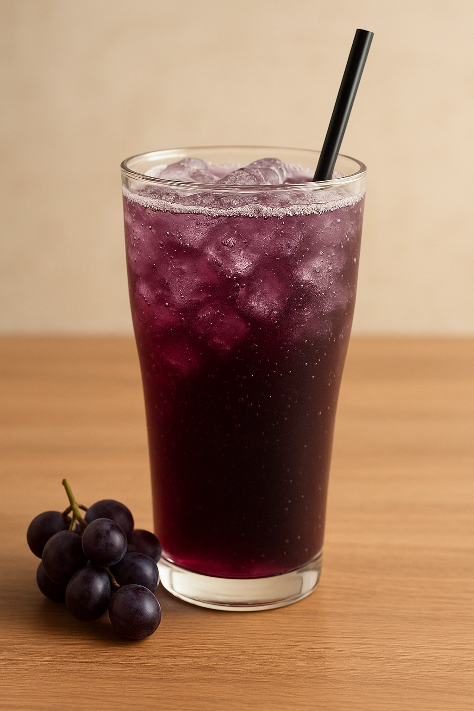

Aqui te mostraremos estas sugerencias de mjugos con sus respectivos toppings, estos jugos tienen un agradable sabor para nuestro paladar.
si tu deseas crear tu propia mezcla de frutas frescas y frutos secos seleccion la opcion "MAS" para mostrarte todas las frutas y frutos secos que tenemos para que armes tu delicioso jugo natural
MAS →